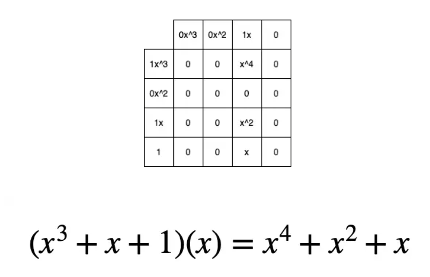

LZ
Table of Contents
Advanced Encryption Standard in Clojure
The Advanced Encryption Standard (a.k.a Rijndael) is a widely used encryption specification. To learn how it works, and some of the motivation behind the design, I decided to build it in Clojure.
WARNING!! Obviously don't use any of this code, or your own implementation of the AES, in production. It will be less efficient and less secure than using the standard libraries for your language of choice. This is just for educational perposes only.
Overview
We're looking at AES-128 in ECB mode. 128 is the key size in bits. ECB (electronic codebook) simply means that each block (16 bytes) of our plaintext will be encrypted statelessly and independently of each other block. It is simpler and less secure than other modes. Each block is processed with a number of steps including 11 rounds. Something a little different happens in the first and last rounds. Each round needs its own 16-byte key, but since we only have one 16-byte key to start with, we'll use it to generate more. As you've probably noticed, everything is happening in chunks of 16 bytes. When it comes to encrypting blocks, we might as well think about them as being in a 4x4 grid in column-major order (ie. the grid is filled from top to bottom, left to right).
| 1 | 5 | 9 | 13 |
| 2 | 6 | 10 | 14 |
| 3 | 7 | 11 | 15 |
| 4 | 8 | 12 | 16 |
Processing per round (except first and last)
- Replace each byte with another from a fixed lookup-table
- Shift rows
- Mix columns
- XOR with the round-key
That’s pretty much it. We’ll deal with the details when they come. Let’s dive in.
Key Expansion
We need to make more keys. The 128-bit key is broken up into 4 32-bit words. These will be used to make a total of 44 words (4 for each of our 11 rounds). words w(0) to w(3) are just the original first 4 words. From there on each new word w(n) is made by XOR-ing w(n - 4) with w(n - 1), except every 4th word, where we use something different. Let’s call this something t.

We calculate t by rotating the previous word, switching the bytes with different bytes from a lookup table which we’ll call s-box, and then XOR-ing this with a round-constant, which is a set value depending on the round. There is some mathematics behind the s-box, and we’ll also use it again in a later part of this journey, but for now all that matters is that each possible byte can be looked up and will return a different byte, so we can just do this with a Clojure map. We’ll just use integers to represent them. Here you go:
s-box
(def s-box {0 99 249 153 121 182 65 131 70 90 218 87 62 178 74 214 164 73 186 244 233 30 188 101 240 140 110 159 130 19 128 205 210 181 229 217 153 238 213 3 7 197 59 226 86 177 154 184 20 250 224 225 72 82 58 128 205 189 60 235 175 121 27 175 1 124 69 110 101 77 24 173 102 51 135 23 55 154 206 139 165 6 85 252 225 248 39 204 88 106 217 53 46 49 149 42 239 223 157 94 4 242 204 75 77 227 106 2 197 166 232 155 119 245 222 29 95 207 144 96 176 231 192 186 54 5 92 74 221 193 141 93 137 167 234 135 104 69 15 118 48 4 242 137 50 35 251 15 116 146 75 179 159 219 99 251 21 89 31 192 113 163 32 183 136 196 139 61 174 228 208 112 182 78 214 246 193 120 241 161 226 152 235 233 40 52 129 12 91 57 117 157 172 145 108 80 156 222 223 158 181 213 56 7 33 253 13 215 22 71 168 194 90 190 237 85 109 60 216 97 191 8 143 115 178 55 247 104 167 92 36 54 41 165 187 234 195 46 118 56 150 144 238 40 196 28 162 58 184 108 219 185 89 203 100 67 243 13 131 236 122 218 43 241 231 148 61 39 29 164 151 136 44 113 250 45 93 76 6 111 111 168 28 156 134 68 64 9 189 122 198 180 155 20 248 65 227 17 220 134 103 133 170 172 51 195 25 212 201 221 166 36 34 147 252 176 146 79 228 105 125 255 148 34 17 130 3 123 12 254 152 70 2 119 66 44 236 206 142 25 107 127 23 240 230 142 47 21 180 141 158 11 35 38 127 210 82 0 76 41 215 14 97 239 19 125 57 18 202 116 68 27 200 232 11 43 115 143 255 22 9 1 145 129 5 107 244 191 112 81 179 109 245 230 254 187 83 237 138 126 14 171 45 216 53 150 78 47 132 95 26 162 123 33 203 31 140 100 16 202 133 151 163 10 81 209 120 188 79 132 211 102 38 247 173 149 126 243 98 170 124 16 171 98 87 91 169 211 160 224 30 114 207 138 194 37 73 59 96 208 10 103 18 201 105 249 185 86 52 24 114 64 253 84 209 62 147 220 67 26 161 50 71 160 42 229 80 83 199 198 37 63 183 169 63 117 212 72 94 88 8 48 246 66 190 174 177 200 49 199 84 32})
Round Constants
The round constants are 4-byte words, the 3 least-significant-bytes are 0, and the most-significant byte comes from a list at the index determined by the round number. here is this list:
(def round-constants (map #(vector % 0 0 0) [1 2 4 8 16 32 64 128 27 54]))
With the above bits of data we can do the key expansion like so:
(defn forth-words-temp [prev counter] (let [rotated (take 4 (drop 1 (cycle prev))) round-key (nth round-key (dec (/ counter 4)))] (->> rotated (map s-box) (map bit-xor round-key)))) (defn next-word [words-so-far counter] (let [prev (last words-so-far) n-minus-4th (nth words-so-far (- counter 4)) temp (if (zero? (mod counter 4)) (forth-words-temp prev counter) (last words-so-far))] (map bit-xor n-minus-4th temp))) (defn key-expansion [key] (->> (let [input-key-words (vec (partition 4 key))] (loop [output-words input-key-words counter 4] (if (< counter 44) (recur (conj output-words (next-word output-words counter)) (inc counter)) ; else output-words))) flatten (partition 16)))
Encryption Process
Now we have 11 keys we can get on with the work of encrypting a block. round 0 uses the first key and just consists of a simple XOR. 1 to 9 are as described above, and the final round is the same as those except there is no Mix Columns stage. Why? Because the whole point of Mix Columns is to diffuse, meaning to jumble up the information. If it were used in the final round, it would be trivially reversible, so it has no value.

We’ve already looked at the S-box (yes, it’s the same one), so let’s see how Shift Rows works:
Shift Rows
Each row gets cycled to the left by a set number of steps. Easy.

(defn shift-row [idx row] (->> row cycle (drop idx) (take 4))) ; we have to do this (apply map vector) malarkey ; because we are in column-major order ; and we want to get at the rows. (defn shift-rows [block] (->> block (partition 4) (apply map vector) (map-indexed shift-row) (apply map vector) flatten))
Mix Columns
Bit more tricky. The main idea is a matrix-vector multiplication, like so:

This looks simple enough. If you need a refresher on matrix-vector multiplication then this will do.
However, there is a catch. we need to keep each element within the range of 1 byte. How to do that? we do the additions as XORs and the multiplications within Finite Field 256. Here we make a major detour…
Galois Fields
Now I’ll make all the mathematicians wince with some loose speak. A Finite Field, also called Galois Field, is a field with a finite number of elements. A field, in casual terms, is a set of numbers with some rules that allow us to do addition, subtraction, multiplication, and division without ever leaving that set of numbers. Galois Fields exist where the number of elements equals a prime to the power of some positive integer. We are interested in GF(28) a.k.a GF(256). In order to multiply in this field, we need to remember polynomial maths and write some code that does polynomial arithmetic.
https://en.wikipedia.org/wiki/Finite_field_arithmetic#Rijndael's_(AES)_finite_field
Disclaimer! this is not the most efficient way to do these calculations. I think it’s better to write something understandable first, and then optimise later, rather than transcribing some bit-shifting magic and not getting it.
We need to be able to do add, multiply, and divide. (don’t worry about subtraction, we can just negate one of the operands to get that for free). To do all of this, we are going to think about numbers in GF(28) as polynomials. These polynomials represent binary arrays where the coefficients are the numbers {1, 0} and the exponents are the positions of each bit in a byte.
For example, the number 74 can be represented in binary as:
[0 1 0 0 1 0 1 0]
As a polynomial, where x = 2:

Polynomial addition
We’ll use vectors to represent polynomials just like the binary array above.
(defn padding [x len] (-> (take (- len (count x)) (repeat 0)) (concat x))) (defn add [a b] (let [max-length (max (count a) (count b))] (->> (map + (padding a max-length) (padding b max-length)) (drop-while zero?)))) (add [1 0 1 0] [1]) ; => (1 0 1 1)
Hey, that looks a lot like XOR! and if we were to throw a mod 2 on the end of it then it would be, since addition in our finite field is mod 2, we’ll just use bit-xor later on in our matrix-multiplication.
Multiplication, you may remember from school, involved multiplying each element with every other element. I like to think about it in a grid.
For example:
[1 0 1 1] [0 0 1 0] = [1 0 1 1 0]

(defn mult [a b] (let [max-length (max (count a) (count b)) a' (-> (padding a max-length) reverse vec) b' (-> (padding b max-length) reverse vec)] (->> (for [i (range max-length) j (range max-length)] {(+ i j) (* (a' i) (b' j))}) (apply merge-with +) (sort-by key >) (map second) (drop-while zero?))))
Finally, division. This is good old long-division. You sort the polynomials into order with the biggest exponent first. See how many times the most significant element of the denominator goes into the most significant element of the numerator. Put that ratio down in your result, multiply the denominator by that ratio, subtract that multiplication from the numerator (you’ve just eliminated the most significant element of the numerator). Repeat until you can’t eliminate any more, adding up the results as you go. Here’s some code:
(defn >poly "test if a is greater than b" [a b] (let [a' (drop-while zero? a) b' (drop-while zero? b)] (cond (= a' b') false (> (count a') (count b')) true (< (count a') (count b')) false (empty? (drop-while #(>= 0 %) (map - a' b'))) false :else true))) (defn div "returns a vector of ratio and remainder" [n d] (cond (= n d) [[1] [0]] (>poly d n) [[0] n] :else (loop [remain n res []] (let [new-exp (- (count remain) (count d)) new-coef (/ (first remain) (first d)) new-res-element (cons new-coef (take new-exp (repeat 0))) new-remain (add remain (map - (mult d new-res-element)))] (if (< new-exp 0) [res new-remain] (recur new-remain (add res new-res-element)))))))
Now we have the bits we need for multiplication in GF(28). Galois field multiplication works with modulo, to prevent us from leaving the set, but the divisor of the modulo is itself a polynomial. This has to be an irreducible polynomial. For the AES algorithm, we use the binary representation of 283, which is [1 0 0 0 1 1 0 1 1]. Our division function above gives us a remainder, so we can use it for modulus. If the result of our multiplication is big enough to hit the 9th bit…
> [1 1 1 1 1 1 1 1]
… then we’ll divide by our divisor and take the remainder. Here’s how. There’s some extra cruft to deal with switching between these vectors representing binary arrays and integers.
(defn int->bin-vec [x] (->> x Integer/toBinaryString (map int) (map #(- % 48)) vec)) (defn gf-256-mult [a b ip] (let [poly-prod (mult (int->bin-vec a) (int->bin-vec b)) [_ poly-mod] (div poly-prod (int->bin-vec ip))] (->> poly-mod (map #(mod % 2)) reverse (map-indexed (fn [idx val] (* val (Math/pow 2 idx)))) (reduce +) int)))
…phew! Okay, now we can finally do our finite field multiplications. Let’s travel back up the stack to Mix Columns.
Mix Columns continued
So we had our matrix multiplication laid out above. Now we know how to multiply.
(def column-mix-matrix [[2 3 1 1] [1 2 3 1] [1 1 2 3] [3 1 1 2]]) (defn mix-column [matrix irr column] (for [row matrix] (let [result (apply bit-xor (map gf/gf-256-mult row column (repeat irr)))] (if (> 0x100 result) result (bit-xor irr result))))) (defn mix-columns [block] (->> block (partition 4) (map (partial mix-column column-mix-matrix 0x11b)) flatten))
That’s it. We can just tie it all together with a few orchestrating functions. Before doing so let’s just refresh our memory as to what the whole process should look like.
(defn normal-round [round-key block] (->> block (map s-box) shift-rows mix-columns (map bit-xor round-key))) (defn apply-normal-rounds [split-keys block] (loop [b block r-keys split-keys n 1] (let [[round-key & other-keys] r-keys] (if (< n 10) (recur (normal-round round-key b) other-keys (inc n)) b)))) (defn aes-128-encrypt-block [key block] (let [split-keys (key-expansion key)] (->> block (map bit-xor (first split-keys)) (apply-normal-rounds (rest split-keys)) (map s-box) shift-rows (map bit-xor (last split-keys)))))
Boom. Happy encrypting. Decryption is pretty straight forward, by the way, I’ll let you figure that out for yourself.